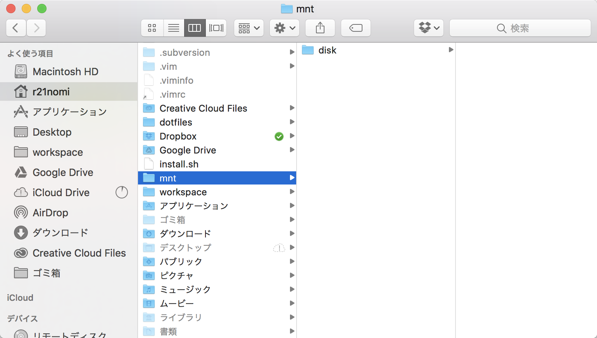
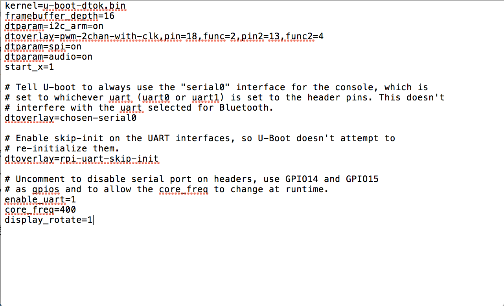

Raspberry Piで動かすAndroid Thingsの画面を回転させる
Android Thingsで作ったアプリを表示する画面を縦向きにしたかったので調査してみた。
結論から先に言うと、Android Things Developer Preview 3.1でRaspberry Piの画面を縦にするのはできない（表示がぐちゃぐちゃになる）。
上下逆さまにするのは可能。
※追記 2017.07.17
Developer Preview 4.1では改善されていた。
準備
- 任意のディレクトリに
mnt/diskフォルダを作成 - マウントするディスク名を確認
$ diskutil listで確認。
$ diskutil list
/dev/disk0 (internal):
#: TYPE NAME SIZE IDENTIFIER
0: GUID_partition_scheme 251.0 GB disk0
1: EFI EFI 314.6 MB disk0s1
2: Apple_CoreStorage Macintosh HD 250.0 GB disk0s2
3: Apple_Boot Recovery HD 650.0 MB disk0s3
/dev/disk1 (internal, virtual):
#: TYPE NAME SIZE IDENTIFIER
0: Apple_HFS Macintosh HD +249.7 GB disk1
Logical Volume on disk0s2
1B8724D6-D1C3-4B9E-81D2-2044A29AB042
Unlocked Encrypted
/dev/disk2 (external, physical):
#: TYPE NAME SIZE IDENTIFIER
0: GUID_partition_scheme *8.0 GB disk2
1: 314F99D5-B2BF-4883-8D03-E2F2CE507D6A 67.1 MB disk2s1
2: 314F99D5-B2BF-4883-8D03-E2F2CE507D6A 1.0 MB disk2s2
3: 314F99D5-B2BF-4883-8D03-E2F2CE507D6A 1.0 MB disk2s3
4: BB499290-B57E-49F6-BF41-190386693794 33.6 MB disk2s4
5: BB499290-B57E-49F6-BF41-190386693794 33.6 MB disk2s5
6: 0F2778C4-5CC1-4300-8670-6C88B7E57ED6 536.9 MB disk2s6
7: 0F2778C4-5CC1-4300-8670-6C88B7E57ED6 536.9 MB disk2s7
8: B598858A-5FE3-418E-B8C4-824B41F4ADFC 65.5 KB disk2s8
9: B598858A-5FE3-418E-B8C4-824B41F4ADFC 65.5 KB disk2s9
10: 6B2378B0-0FBC-4AA9-A4F6-4D6E17281C47 1.0 MB disk2s10
11: AA3434B2-DDC3-4065-8B1A-18E99EA15CB7 33.6 MB disk2s11
12: AA3434B2-DDC3-4065-8B1A-18E99EA15CB7 33.6 MB disk2s12
13: 314F99D5-B2BF-4883-8D03-E2F2CE507D6A 268.4 MB disk2s13
14: 314F99D5-B2BF-4883-8D03-E2F2CE507D6A 268.4 MB disk2s14
15: 0BB7E6ED-4424-49C0-9372-7FBAB465AB4C 2.7 GB disk2s15
今回マウントするのは/dev/disk2のディスク
マウント、書き込み、マウント解除
ここでは、マウント先ディレクトリはホームディレクトリ直下に作ったmnt/diskとする。
# マウント①
$ sudo mount -t msdos /dev/disk2s1 ./mnt/disk
# 書き込み②
$ echo 'display_rotate=1' >> ./mnt/disk/config.txt
# マウント解除③
$ sudo umount ./mnt/disk
マウント前 
①マウント後
書き込みできるようになるまで（このアイコンに変わるまで）ほんの少し時間がかかるので、finderでフォルダアイコンが変わるのを確認してから次の書き込みコマンドを実行すると良い。

②書き込み後
display_rotate=1がある。
display_rotate=1は時計回りに90°回転の意味。

③マウント解除
finder上のmnt/diskの表示がマウント前の状態に戻る。
この状態であればmicrosdの取り出しが可能。
raspberry piを起動。

display_rotate=1だと画面表示が崩れてしまう。
display_rotate=2なら正常に上下逆さまになる。
mountについて
mountとはディスク装置を読み書きできるようにする作業のこと。
usbメモリなどをPCに接続すると画像のようなアイコンがでるが、これがマウントされている状態。
通常のディスクは接続するだけで自動でマウントされることがほとんどだが、読み込み不可になっているディスクを強制的に読み込む場合などにmountコマンドを用いればマウント状態にすることができる。

$ mount -t タイプ デバイス マウント先ディレクトリ
参考：http://eng-entrance.com/linux-command-mount
display_rotateの値による効果
| 設定 | 効果 |
|---|---|
| display_rotate=0 | 標準 |
| display_rotate=1 | 時計回りに90°回転する |
| display_rotate=2 | 時計回りに180°回転する |
| display_rotate=3 | 時計回りに270°回転する |
| display_rotate=0x10000 | 横方向に裏返す |
| display_rotate=0x20000 | 縦方向に裏返す |
※ディスプレイがタッチスクリーンの場合はlcd_rotateを使う。
※1 Developer Preview 4.1では改善済み。
参考
http://stackoverflow.com/questions/41165198/android-things-with-rasp3-7-inch-touchscreen/ http://stackoverflow.com/questionunt](http://eng-entrance.com/linux-command-mount)